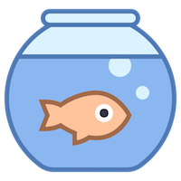
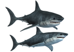
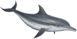
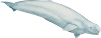

A 25-year-old Orca I'm living in SeaWorld San Diego Today, I bring my friends from the SeaWorld to share our stories with you We also bring a special gift to you at the end of our stories Ready? Let’s get started!
Imagine you are captived by someone. All you do everyday is doing some nonsense movements for food. You lost your mom or dad. You friends suffered from disease, and eventually they died. How would you feel?
If you feel sad about my story, share the video to your social media by clicking the arrow in the upper right corner of the video. Tell your friends and families how I experienced death, aggression, disease and separation in the SeaWorld.

Click the arrow on the RIGHT to read the stories of sharks, dolphins, orcas and belugas in SeaWorlds and aquariums all over the world

in Wild
Average lifespan is between 20-30 years
There are more than 400 species of us in the shark family. Even though we look significantly different, we shared many similarities. We all need to keep swimming in opening water, because in this way when we forced the water passed our mouths, we get
fresh oxygen. We are also very sensitive. Sharks have all the senses that human have, and plus sensations for electricity and vibration. We used the senses to help us navigate and hunt.
in Captivity
A few last for 1 year, others died within days or weeks
Even though some of the benthic sharks are doing okay, most of us have a hard time living in captivity. Because of our sensitivity, we cleary realize we are not in the ocean, and this makes us really stressful. The nosies and lights are very confusing,
because we used to use them for detecting prey and avoiding danger. Some of us need a large body of water to swim in, but the tank is never big enough, so we just keep bumping to the glass.
Imagine you’re trapped in a small room as big as the size of an elevator. You can’t see the wall, but you want to go out. How would your life looks and feels like?

in Wild
Varied among species (15-20 years to 50-60 years)
We travel 40+ miles a day, because we need to move continuously. As you all know, we are highly intelligent and social animals, so we usually swim and hunt together with the pods. Everyday, we spend 80% of the time under the surface,
and we never beach ourselves in the nature. There is no incident of reporting dolphins deliberately attacking human in the wild.
in Captivity
At least 50% of the dolphins died in less than 7 years.
We are used for performance, riding, and padding.In captivity, we are mostly separated from the pods. To entertain people, we have to spend 80% of the time on surface, and you can see us beach ourselves in the show. Because of
our appearance, we always seem to be happy and friendly, but the truth is no! We don’t like to carry people back and forth, or have tons of hands touch our body. When we are too frustrated we bite trainers and tourists.
Imagine hundreds of hands are touching you everyday. In order to get food, you have to let others ride you on your back. How would your life looks and feels like?
in Wild
Average lifespan is 30-50 years
We travel 100+ miles a day in wild. Just like dolphins, we are also social animals that live with family members. We never interbred across species, becaues the social rules and langauges are different among groups. An important
social rule is the prohibition of violence. Even though our nickname is killer whale, we are actually very calm and harmless to human. In the history, there is only one documented orca attacking human in the wild in centuries.
in Captivity
Average lifespan is 13 years
In the tank we can only swim in endless laps. We’re transferred from tank to tank for unnatural breeding (male orca is masturbated by trainers), and often times interbreeding. Orkid is a tragic example of interbreeding. We are
so anxious and depressed, so we cannot control ourselves from aggression. Within the history of orca captivty, 4 trainers died and many injured.
Imagine you are forced to build a family with a person who not only cannot communicate with you, but also have totally different background with you. How would your life looks and feels like?

in Wild
Average lifespan is 35-50 years
Our natural behavior is very similar with the behaviour of dolphins and orcas. We are social animals that live with families, and we swim a lot everyday. In wild, we mate seasonally, and a female beluga can have a baby in every
two to three years. When a female and a male beluga likes each other, they touch each others’ head or pectoral fins, and they swim side by side in close contact.
in Captivity
Average lifespan is unclear
A very sad thing is that it’s very hard for us to have babies in captivity. Maris was a 21-year-old female beluga in the Georgia Aquarium. She was lucky enough to have two babies, but all her babies died because of frequent transportation
between facilities. In 2015, she also died because of a sudden and unexpected heart failure. In addition, female beluga got injured by male in the process of aggressive sexual behaviour, because she has no where to escape.
Imagine your can never have a baby, or your baby cannot live long. How would your life looks and feels like?
Thank you for learning about our stories! Remember the special gift Orkid mentioned?
Click the gift to open it!
×People trained me to do tricks, and I just played a trick on you ! There’s no free ticket. When you choose to visit a SeaWorld, our lives are in risk . I encourage you stop visiting SeaWorld . Only demand leads to supply
. We really need your help !
×People trained me to do tricks, and I just played a trick on you ! There’s no free ticket. Thank you so much for helping us by not coming to SeaWolrd . Only when there is no demand, there won’t be supply . Please spread
the word. We really need your help !